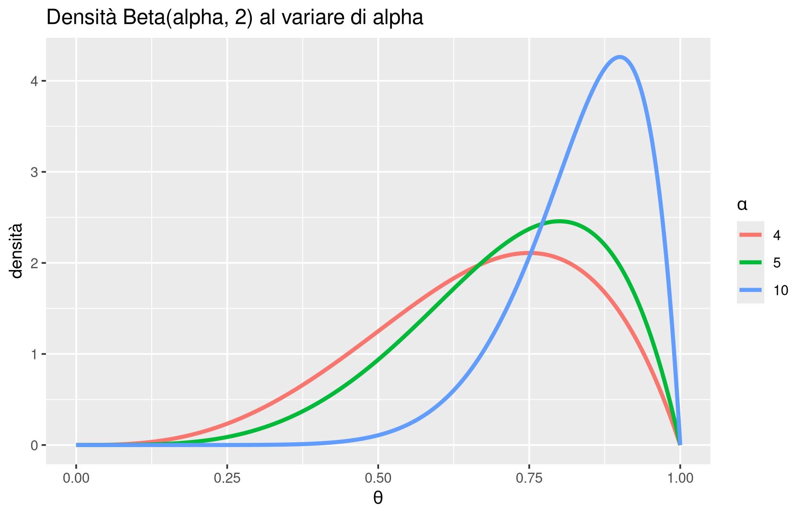

Al termine del capitolo dovresti essere in grado di:
spiegare perché l’accuratezza da sola può essere fuorviante e leggere correttamente una matrice di confusione, calcolando prevalenza, precisione, TPR e FPR;
distinguere uno stimatore di massimo a posteriori (MAP) da uno di massima verosimiglianza (MLE) e spiegare in che senso il secondo è un caso particolare del primo;
ricostruire, in un esempio semplice (Bernoulli/urna), come la formula di Bayes trasformi una densità a priori in una densità a posteriori man mano che arrivano osservazioni;
descrivere la differenza tra modelli generativi e discriminativi e collocare Naive Bayes, LDA/QDA e regressione logistica in questo schema;
addestrare e interpretare (non implementare da zero) un classificatore Naive Bayes, un LDA/QDA e una regressione logistica in R, leggendone matrice di confusione, curva ROC e AUC;
discutere criticamente i limiti dell’ipotesi di indipendenza di Naive Bayes e il significato — e i limiti — dell’AUC come indicatore sintetico di prestazione.
Il capitolo comincia dove si era interrotto il precedente: il Capitolo 4 aveva introdotto KNN, la convalida incrociata e il compromesso bias-varianza, ma si era fermato prima di discutere come si misura la qualità di un classificatore binario. Recuperiamo quindi la matrice di confusione e le sue metriche, e le usiamo subito dopo come vocabolario per la curva ROC. Da lì passiamo al cuore della lezione: una famiglia di classificatori — Naive Bayes, LDA, QDA, regressione logistica — che, a differenza di KNN, non si basano sulla nozione di “punti vicini” ma su un modello probabilistico esplicito costruito attorno alla formula di Bayes.
5.2 Classificatori binari: matrice di confusione e metriche di prestazione
5.2.1 Motivazione
Nel Capitolo 4 abbiamo misurato la qualità di un classificatore con l’accuratezza, la percentuale di esempi classificati correttamente. È un indicatore intuitivo, ma può essere pericolosamente ingannevole quando le classi non sono bilanciate.
Immagina un test diagnostico per una malattia rara, con prevalenza dell’1% nella popolazione (un caso su cento). Il classificatore “banale” \(h(x) = -1\) per ogni \(x\) — cioè: dichiara sempre sano chiunque — ottiene un’accuratezza del 99%. È un classificatore inutile (non identifica mai nessun malato), eppure il suo punteggio di accuratezza sembra eccellente. Questo è il motivo per cui, in presenza di classi sbilanciate, l’accuratezza da sola non basta: serve un vocabolario più fine che distingua i due modi in cui un classificatore può sbagliare e i due modi in cui può avere ragione.
5.2.2 Concetto/definizione
D’ora in avanti ci concentriamo sul caso di classi binarie\(C = \{-1, +1\}\) (rispettivamente Negativi e Positivi — ad esempio “sano/malato”, “non spam/spam”, “non fraudolento/fraudolento”). La prevalenza è la probabilità a priori della classe positiva, \(P(L=+1)\): nell’esempio sopra era l’1%.
Dato un classificatore \(h\) e un insieme di dati etichettati, la matrice di confusione (confusion matrix) è la tabella di contingenza che incrocia l’etichetta reale con quella predetta:
ImportantDefinizione
La matrice di confusione di un classificatore binario \(h\) su un insieme di dati è
TP (veri positivi): positivi reali classificati correttamente come positivi;
FN (falsi negativi, o mancato allarme): positivi reali classificati erroneamente come negativi;
FP (falsi positivi, o falso allarme): negativi reali classificati erroneamente come positivi;
TN (veri negativi): negativi reali classificati correttamente come negativi.
Si scrive spesso \(P = TP+FN\) per il numero totale di positivi reali e \(N = FP+TN\) per il numero totale di negativi reali.
5.2.3 Intuizione
La matrice di confusione non è altro che i quattro modi in cui una predizione binaria può incrociare una realtà binaria: due modi di avere ragione (TP, TN) e due modi di sbagliare (FP, FN), che sono qualitativamente molto diversi. Un falso allarme e un mancato allarme raramente hanno lo stesso costo pratico: mandare in quarantena una persona sana (FP) è fastidioso, non diagnosticare una persona malata (FN) può essere grave. La matrice di confusione conserva questa distinzione, mentre l’accuratezza (che somma indistintamente TP e TN al numeratore) la cancella.
5.2.4 Esempio
Riprendiamo il classificatore KNN allenato nel Capitolo 4 su un dataset di screening del diabete, con \(100\) pazienti nel test set. La matrice di confusione ottenuta è:
La precisione e la TPR rispondono a domande diverse. La precisione risponde a: tra tutti quelli che ho dichiarato positivi, quanti lo erano davvero? La TPR (sensitività) risponde a: tra tutti quelli che erano davvero positivi, quanti ne ho individuati? Un classificatore può avere precisione alta e TPR bassa (è molto selettivo, ma si lascia sfuggire molti casi veri) o viceversa. Nell’esempio, TPR \(=53\%\) significa che il classificatore individua poco più della metà dei pazienti diabetici reali: se l’obiettivo clinico è non perdere casi, questo è un valore preoccupante anche con un’accuratezza complessiva del 73%.
Torniamo al classificatore “banale” della malattia rara: con prevalenza \(1\%\), ha \(TP=0\), \(FN=P\), quindi \(\operatorname{TPR}=0\). La sua accuratezza del 99% nascondeva un TPR nullo — il classificatore non riconosce mai un malato. Questo conferma perché prevalenza, precisione, TPR e FPR insieme raccontano una storia che l’accuratezza da sola non può raccontare.
TipUn nuovo esempio: screening oncologico a soglie diverse
Immagina un test di screening che restituisce un punteggio di rischio continuo, poi trasformato in “positivo/negativo” tramite una soglia. Con una soglia bassa (basta un piccolo indizio di rischio per essere dichiarati positivi), il test cattura quasi tutti i tumori reali (TPR alto) ma genera molti falsi allarmi in persone sane (FPR alto): tanti pazienti sani verranno sottoposti a esami di approfondimento inutili e ansiogeni. Con una soglia alta (serve un indizio molto forte), il test è molto selettivo (FPR basso, precisione alta) ma rischia di non individuare tumori in fase iniziale (TPR basso). Non esiste una soglia “oggettivamente migliore”: la scelta dipende dal costo relativo di un falso positivo (esame invasivo inutile) rispetto a un falso negativo (diagnosi mancata). Terremo a mente questo esempio quando, più avanti, introdurremo la curva ROC come lo strumento che rende esplicito questo compromesso.
WarningAttenzione
La matrice di confusione ha due limiti importanti. Primo, non fornisce direttamente una probabilità di errore: bisogna passare ai tassi (TPR, FPR, precisione) per avere quantità confrontabili tra dataset di dimensioni diverse. Secondo, è difficile confrontare due matrici di confusione di classificatori diversi a colpo d’occhio: un classificatore può avere TP e FP entrambi più alti di un altro, senza che sia chiaro quale sia “complessivamente” migliore. Vedremo che la curva ROC nasce proprio per rendere questo confronto più sistematico.
Un’ultima osservazione, che ci servirà presto: se rappresentiamo un classificatore come un punto \((\operatorname{FPR}, \operatorname{TPR})\) nel quadrato \([0,1]^2\), un classificatore ideale sta nell’angolo in alto a sinistra \((0,1)\) (nessun falso allarme, tutti i positivi individuati), mentre un classificatore che decide “a caso” (una moneta equa, indipendente dai dati) si colloca in media sulla diagonale del quadrato. Più il punto è vicino all’angolo in alto a sinistra, migliore è il classificatore. Se il classificatore dipende da un parametro che possiamo far variare (come il numero di vicini \(k\) in KNN, o — come vedremo tra poco — una soglia \(t\) su un punteggio), invece di un singolo punto otteniamo una curva in questo piano: è esattamente la curva ROC a cui dedicheremo una sezione più avanti.
5.2.7 Domande di comprensione
Un classificatore ha \(\operatorname{TPR}=0.95\) e \(\operatorname{FPR}=0.4\). Un secondo ha \(\operatorname{TPR}=0.7\) e \(\operatorname{FPR}=0.05\). Nessuno dei due domina l’altro. In quale contesto applicativo preferiresti il primo? In quale il secondo?
Perché, con classi fortemente sbilanciate, un’accuratezza del 95% può essere sia un ottimo risultato sia un risultato pessimo, a seconda della prevalenza?
Costruisci un piccolo esempio numerico (puoi inventare TP, FP, TN, FN) in cui precisione e TPR sono entrambe alte ma TPR è molto più bassa. Cosa ti dice questo esempio sull’indipendenza tra le due metriche?
5.3 La formula di Bayes e gli stimatori puntuali
5.3.1 Motivazione
Fino a questo punto abbiamo visto un solo classificatore, KNN, che decide guardando la vicinanza geometrica tra punti. Esistono classificatori più potenti, basati non sulla geometria ma su un modello probabilistico esplicito dei dati. Tutti quelli che vedremo in questo capitolo — Naive Bayes, LDA, QDA, e in parte anche la regressione logistica — condividono la stessa struttura concettuale: sotto sotto, sono tutti basati sulla formula di Bayes.
5.3.2 Concetto/definizione
ImportantDefinizione
Date variabili aleatorie \(X \in F\) (le caratteristiche, o features) e \(\theta \in \Theta\) (i parametri, che nel nostro contesto saranno spesso le etichette da classificare), la formula di Bayes afferma
I quattro termini si chiamano, rispettivamente: \(P(\theta \mid X=x)\)probabilità a posteriori; \(P(X=x\mid\theta) = \mathcal{L}(\theta; X=x)\)verosimiglianza; \(P(\theta)\)probabilità a priori; \(P(X=x)\)probabilità marginale delle caratteristiche.
Il denominatore \(P(X=x)\) non dipende da \(\theta\): è la stessa costante per ogni valore del parametro. Per questo motivo si scrive spesso soltanto
cioè: la densità a posteriori è proporzionale alla densità a priori ripesata dalla verosimiglianza. Ignorare il denominatore non cambia dove si trova il massimo della densità, e per la classificazione — dove alla fine dovremo solo confrontare le probabilità delle diverse classi — è proprio il massimo che ci interessa.
5.3.3 Intuizione: dalla densità alla decisione
Una volta calcolata (o stimata) una densità a posteriori, come si trasforma in una decisione? Il modo più semplice, che funziona sia per densità discrete sia continue, è prendere la moda: il valore più probabile. Questo porta ai due stimatori puntuali più importanti del capitolo.
ImportantDefinizione
Data la formula di Bayes, si definiscono:
la stima di massimo a posteriori: \(\displaystyle \theta_{MAP} := \arg\max_\theta P(\theta\mid X=x) = \arg\max_\theta P(\theta)\,\mathcal{L}(\theta; X=x)\);
la stima di massima verosimiglianza: \(\displaystyle \theta_{MLE} := \arg\max_\theta \mathcal{L}(\theta; X=x)\).
La differenza tra le due sta interamente nel fattore \(P(\theta)\): se assumiamo che la densità a priori sia uniforme (tutte le classi/parametri ugualmente plausibili prima di osservare i dati), moltiplicare per una costante non sposta l’argmax, e \(\theta_{MAP}=\theta_{MLE}\). In altre parole, la massima verosimiglianza è un caso particolare della massima a posteriori, quello in cui non si porta alcuna informazione pregressa sulle classi. Questo spiega perché la statistica classica (“frequentista”), che tipicamente parte da Statistica I con la sola MLE, si può vedere come un caso speciale dell’approccio bayesiano più generale — un collegamento a cui torneremo esplicitamente nel Capitolo 7, quando confronteremo l’approccio bayesiano e quello frequentista per l’inferenza sui coefficienti di un modello di regressione.
Ci sono situazioni in cui un prior non uniforme è più realistico: se sappiamo a priori che una malattia è rara — diciamo, un caso su un milione — ha senso incorporare questa informazione nel modello invece di trattare tutte le classi come equiprobabili prima ancora di vedere i dati del paziente.
WarningAttenzione
Uno stimatore puntuale, per costruzione, non comunica l’incertezza della decisione. Se la densità a posteriori ha due valori quasi ugualmente probabili e uno dei due è per pochissimo il massimo, \(\theta_{MAP}\) sceglierà quello — ma senza dirci che l’altro era quasi altrettanto plausibile. Ricordare questo limite è importante quanto saper calcolare la stima stessa: una moda non è un intervallo di confidenza.
5.3.4 Esempio: il parametro di una Bernoulli
Il problema più semplice a cui applicare questi concetti è la stima della frazione \(\theta \in [0,1]\) di palline rosse in un’urna, effettuando estrazioni con rimpiazzo (ogni estrazione è indipendente dalle altre, perché rimettiamo la pallina estratta prima di mescolare di nuovo). Se \(X\) è il numero di palline rosse osservate in \(n\) estrazioni, la verosimiglianza è la densità binomiale
Se non abbiamo alcuna informazione pregressa su \(\theta\), la scelta più naturale è una densità a priori uniforme, \(P(\theta)=1\) per \(\theta \in [0,1]\). In questo caso
\[
\theta_{MAP} = \theta_{MLE} = \frac{x}{n}.
\]
TipApprofondimento: la derivazione
Il risultato si ottiene annullando la derivata (in \(\theta\), non in \(x\)!) di \(\theta^x(1-\theta)^{n-x}\) — il coefficiente binomiale non dipende da \(\theta\) e può essere ignorato nella massimizzazione. Derivando e semplificando si ottiene un’equazione lineare in \(\theta\), la cui soluzione è \(x/n\): la frazione di successi osservati. Il conto è lo stesso richiamo di Statistica I; il punto pedagogicamente importante qui non è saperlo rifare, ma capire perché il risultato ha senso: se in 100 estrazioni ne avete viste 30 di successo, la stima più naturale della probabilità di successo è \(30/100\) — “casi osservati su prove totali”, non “casi favorevoli su casi possibili”.
5.3.5 Il posteriore che si aggiorna: la demo “Angry Bayes”
Il meccanismo della formula di Bayes si vede bene con una piccola simulazione interattiva (“Angry Bayes”, disponibile come app Shiny nel materiale del corso). Si parte fissando una densità a priori arbitraria per \(\theta\) — anche una curva “strana”, ad esempio bimodale, che concentra la fiducia sia vicino a \(0\) sia vicino a \(1\). Poi si eseguono dei lanci (estrazioni) e si osserva la densità a posteriori aggiornarsi.
L’effetto è drammatico già con pochi lanci. Supponiamo che il vero parametro sia \(\theta = 0.02\) (successi rarissimi) e che nei primi cinque lanci si osservino solo insuccessi. La verosimiglianza penalizza fortemente ogni \(\theta\) lontano da \(0\), e quando si moltiplica per il prior — anche un prior che inizialmente favoriva fortemente il successo — il risultato è un posteriore quasi interamente concentrato vicino a \(0\): il prior iniziale viene “cancellato” dall’evidenza osservata. Con un solo lancio la verosimiglianza è ancora poco informativa (una semplice retta, nel caso di un singolo insuccesso: \(\mathcal L(\theta)=1-\theta\)); con quindici lanci diventa una curva molto più appuntita, capace di dominare quasi ogni prior ragionevole.
Questo è il fenomeno generale: più osservazioni si accumulano, più la verosimiglianza “schiaccia” il prior, indipendentemente da dove il prior fosse inizialmente concentrato. È anche il motivo per cui, con dataset sufficientemente grandi, la scelta del prior diventa relativamente poco importante — un’osservazione che tornerà utile quando, nel Capitolo 7, discuteremo l’inferenza bayesiana per la regressione lineare.
5.3.6 Domande di comprensione
Se il prior \(P(\theta)\) è uniforme, perché \(\theta_{MAP}=\theta_{MLE}\)? Cosa cambierebbe se il prior favorisse fortemente \(\theta\) vicino a \(0.5\)?
Uno studente osserva 3 successi su 4 lanci e conclude “sono sicuro al 100% che \(\theta \approx 0.75\)”. Cosa c’è di sbagliato in questa affermazione, alla luce della differenza tra stima puntuale e densità completa?
Nell’esempio della malattia rara, perché usare un prior uniforme (equiprobabilità tra malato e sano) sarebbe una scelta statisticamente discutibile?
5.4 La densità Beta e la regola di successione di Laplace
5.4.1 Motivazione
Lo stimatore \(\theta_{MLE}=x/n\) dà un singolo numero, ma non dice quanto siamo sicuri di quel numero, né come usarlo per fare una previsione sulla prossima estrazione. Per rispondere a queste domande conviene lavorare con l’intera densità a posteriori, non solo con la sua moda — ed esiste una famiglia di densità particolarmente comoda per farlo.
5.4.2 Concetto/definizione
ImportantDefinizione
La densità \(\mathrm{Beta}(\alpha,\beta)\), per \(\alpha,\beta>0\), è la densità continua su \([0,1]\)
La sua moda è \(\theta^* = \dfrac{\alpha-1}{\alpha+\beta-2}\), la sua media è \(\mathbb{E}[\theta] = \dfrac{\alpha}{\alpha+\beta}\), e la sua varianza è \(\operatorname{Var}(\theta) = \dfrac{\alpha\beta}{(\alpha+\beta)^2(\alpha+\beta+1)} \to 0\) quando \(\alpha+\beta\to\infty\).
5.4.3 Intuizione: pseudo-conteggi e coniugazione
La forma \(\theta^{\alpha-1}(1-\theta)^{\beta-1}\) è scelta apposta per assomigliare alla verosimiglianza binomiale \(\theta^x(1-\theta)^{n-x}\): se partiamo da un prior uniforme (che è \(\mathrm{Beta}(1,1)\)) e osserviamo \(x\) successi in \(n\) prove, il posteriore diventa \(\theta^x(1-\theta)^{n-x}\), cioè esattamente \(\mathrm{Beta}(x+1, n-x+1)\). La famiglia Beta è quindi conservata dall’aggiornamento bayesiano nel modello Bernoulli (una proprietà nota come coniugazione): il posteriore resta nella stessa famiglia del prior, semplicemente con parametri aggiornati.
Questo spiega l’interpretazione dei parametri: \(\alpha - 1\) si legge come “un numero di successi già osservati (o immaginati)” e \(\beta-1\) come “un numero di insuccessi”, anche prima di raccogliere dati veri — per questo si parla di pseudo-conteggi. Osserva anche che la varianza della Beta tende a \(0\) quando il numero totale di pseudo-osservazioni \(\alpha+\beta\) cresce: più prove (reali o immaginate) accumuliamo, più siamo sicuri del valore di \(\theta\). Questo è lo stesso fenomeno espresso, in altro linguaggio, dalla legge dei grandi numeri di Statistica I.
WarningAttenzione
Non confondere media e moda. La moda di una \(\mathrm{Beta}(\alpha,\beta)\) è \(\frac{\alpha-1}{\alpha+\beta-2}\), la media è \(\frac{\alpha}{\alpha+\beta}\): sono in generale numeri diversi (coincidono solo per densità simmetriche, come \(\alpha=\beta\)). Lo stesso vale, più in generale, per qualunque dato osservato: media e moda campionarie non sono la stessa cosa, e scegliere l’una o l’altra come “riassunto” di una distribuzione asimmetrica porta a conclusioni diverse — un tema già incontrato nel Capitolo 1 a proposito degli indicatori di centralità.
5.4.4 Esempio
library(ggplot2)theta <-seq(0, 1, by =0.001)alpha_vals <-c(4, 5, 10)dati_beta <-do.call(rbind, lapply(alpha_vals, function(a) {data.frame(theta = theta, densita =dbeta(theta, a, 2), alpha =factor(a))}))ggplot(dati_beta, aes(x = theta, y = densita, col = alpha)) +geom_line(linewidth =1.2) +labs(title ="Densità Beta(alpha, 2) al variare di alpha",x =expression(theta), y ="densità", col =expression(alpha))

NoteCome leggere il risultato
Le tre curve corrispondono a \(\beta=2\) fisso (un solo “pseudo-insuccesso”) e \(\alpha\) crescente (sempre più “pseudo-successi”). All’aumentare di \(\alpha\) la curva si sposta verso destra (siamo sempre più convinti che \(\theta\) sia vicino a \(1\)) e si restringe (siamo sempre più sicuri). Osserva però che nessuna delle tre curve arriva mai a coprire \(\theta=1\): la presenza di \(\beta=2>1\) (un insuccesso osservato) impedisce alla densità di concentrarsi sulla certezza assoluta del successo.
5.4.5 Previsione: approssimata vs. esatta, e la regola di Laplace
Avendo osservato \(r\) palline rosse su \(n\) estrazioni, qual è la probabilità che la prossima estrazione dia una pallina rossa? Ci sono due modi di rispondere.
Approccio approssimato. Si usa la stima puntuale \(\theta_{MLE}=r/n\) e si tratta come se fosse il vero parametro: \[
P(X=1\mid X_n=r) \approx r/n.
\]
Approccio esatto. Si tiene conto di tutta l’incertezza residua su \(\theta\), integrando (legge della probabilità totale, o disintegrazione): \[
P(X=1\mid X_n=r) = \int_0^1 P(X=1\mid\theta, X_n=r)\, P(\theta\mid X_n=r)\, d\theta,
\] che porta alla celebre regola di successione di Laplace: \[
P(X=1\mid X_n=r) = \frac{r+1}{n+2}.
\]
NoteCome leggere il risultato
La differenza tra le due formule (\(r/n\) contro \((r+1)/(n+2)\)) è piccola quando \(n\) è grande, ma concettualmente importante quando \(n\) è piccolo o \(r=0\). Se non avete mai osservato un successo (\(r=0\)), la formula approssimata dà probabilità zero per il prossimo successo — un’affermazione molto forte (“non lo vedremo mai”). La regola di Laplace dà invece \(1/(n+2)\): piccola, ma strettamente positiva. Questo effetto si chiama smoothing (o regolarizzazione) di Laplace: tenere conto dell’incertezza residua evita di essere eccessivamente pessimisti sulla base di un campione ancora piccolo. Ritroveremo esattamente questa idea, con la stessa formula a meno di riscalamento, nell’addestramento di Naive Bayes più avanti in questo capitolo.
TipUn po’ di storia
La regola di successione di Laplace è un esempio classico — e storicamente controverso — di ragionamento bayesiano applicato a un problema concreto (Laplace la usò, tra l’altro, per stimare la probabilità che il sole sorga domani, dato che è sorto ogni giorno per un numero enorme di osservazioni passate). Lo stesso Laplace non la presentò come un risultato di importanza fondamentale, e fu in seguito oggetto di ironia da parte di altri statistici per l’apparente ingenuità dell’applicazione all’esempio del sole. Resta comunque un ottimo esempio didattico della differenza tra una stima puntuale “sicura di sé” e una previsione che tiene conto esplicitamente dell’incertezza residua — la stessa distinzione, in altre parole, che in Statistica I separava una stima puntuale da un intervallo di confidenza.
5.4.6 Domande di comprensione
Perché la densità Beta è una scelta “comoda” per il prior nel modello Bernoulli, al di là dell’interpretazione in termini di pseudo-conteggi?
Con \(r=0\) successi su \(n=10\) prove, confronta \(r/n\) e la regola di Laplace \((r+1)/(n+2)\). Quale delle due ti sembra più ragionevole per prevedere il prossimo esito, e perché?
Se \(\alpha+\beta \to \infty\) mantenendo \(\alpha/(\alpha+\beta)\) costante, cosa succede alla densità Beta? Collega la risposta alla legge dei grandi numeri.
5.5 Stima di media e varianza di una distribuzione gaussiana
5.5.1 Motivazione
L’esempio dell’urna riguarda un parametro discreto (successo/insuccesso) e ci ha preparato al meccanismo della formula di Bayes. Il prossimo esempio — stimare media e varianza di una gaussiana da osservazioni continue — è concettualmente identico, ma il suo vero valore è come anticipazione del problema della regressione, che affronteremo a partire dal Capitolo 6: stimare un “livello medio” da dati rumorosi è precisamente ciò che fa un modello di regressione quando prevede \(y\) da \(x\).
5.5.2 Concetto/definizione
Supponiamo di voler stimare media \(m\) e deviazione standard \(\sigma\) di una popolazione gaussiana da \(n\) osservazioni indipendenti \(x_1,\dots,x_n\). La verosimiglianza (prodotto di densità gaussiane, per indipendenza) è
Una scelta comune di prior “non informativo” è \(P(m,\sigma) = 1/\sigma\) per \(m\in\mathbb R,\ \sigma>0\) — non è l’unica scelta possibile, ma è quella che porta ai conti più semplici e a un parallelo diretto con i risultati di Statistica I.
5.5.3 Le stime e le tre previsioni possibili
Le stime che si ottengono massimizzando verosimiglianza e posteriore sono:
\(\sigma^2_{MLE}\) non è esattamente la varianza campionaria “corretta” di Statistica I: divide per \(n\), non per \(n-1\). Con \(n\) grande la differenza è trascurabile, ma vale la pena ricordarla: il fattore \(1/(n-1)\) nasce da una correzione per la non conoscenza di \(m\), e la stima di massima verosimiglianza — che è “ingenua” per costruzione — non la include automaticamente.
Una volta stimati i parametri, si possono fare tre tipi di previsione per una nuova osservazione \(X_{n+1}\), in ordine di crescente attenzione all’incertezza:
Approssimata (plug-in, usando le stime MLE come se fossero i veri parametri): \[
X_{n+1} \sim \mathcal N(\bar x_n, \operatorname{var}(x)_n).
\]
Bayesiana con \(\sigma^2\) nota: tiene conto dell’incertezza residua sulla sola media, \[
X_{n+1} \sim \mathcal N\left(\bar x_n, \frac{n+1}{n}\sigma^2\right).
\]
Bayesiana esatta: integrando su tutta l’incertezza residua (sia su \(m\) sia su \(\sigma\)), si ottiene una distribuzione di Student-\(t\) con \(n-1\) gradi di libertà, \[
P(X_{n+1}=x_{n+1}) \propto \left(1+\frac{1}{n+1}\frac{(x_{n+1}-\bar x_n)^2}{\operatorname{var}(x)_n}\right)^{-n/2}.
\]
5.5.4 Interpretazione
NoteCome leggere il risultato
Le tre previsioni non sono in disaccordo tra loro: convergono tutte quando \(n\) è grande, perché l’incertezza residua sui parametri diventa trascurabile. La differenza si vede quando \(n\) è piccolo: la varianza predittiva bayesiana con \(\sigma^2\) nota è più grande di quella plug-in (fattore \(\frac{n+1}{n}>1\)), perché somma alla variabilità intrinseca dei dati anche l’incertezza residua sulla stima della media. La previsione Student-\(t\) esatta è ancora più prudente (le code della \(t\) sono più pesanti di quelle della gaussiana), perché tiene conto anche dell’incertezza residua su \(\sigma\). In sintesi: più incertezza riconosciamo esplicitamente, più larga è la distribuzione predittiva — un principio che riapparirà quasi identico, in forma leggermente diversa, quando nel Capitolo 7 discuteremo gli intervalli di previsione per la regressione lineare.
Non è un caso che qui compaia esattamente la stessa distribuzione di Student vista in Statistica I per i test e gli intervalli di confidenza a varianza incognita: il ragionamento — “non conosco \(\sigma\) con certezza, quindi devo tenerne conto quando quantifico l’incertezza” — è identico.
5.5.5 Domande di comprensione
Perché \(\sigma^2_{MLE}\) e la varianza campionaria “corretta” di Statistica I differiscono solo per un fattore che diventa trascurabile quando \(n\) cresce?
Metti in ordine, dalla più stretta alla più larga, le tre distribuzioni predittive (plug-in, bayesiana a \(\sigma^2\) nota, Student-\(t\) esatta). Perché questo ordine ha senso intuitivamente?
Che relazione vedi tra “usare la Student-\(t\) invece della gaussiana quando \(\sigma\) è incognita” qui, e la stessa scelta fatta per gli intervalli di confidenza in Statistica I?
5.6 Modelli generativi e discriminativi per la classificazione
5.6.1 Motivazione
Torniamo ora alla classificazione. Vogliamo costruire un classificatore \(h(x) = \arg\max_\ell P(C=\ell\mid X=x)\): dato un punto \(x\), scegliere l’etichetta più probabile. Ci sono due strategie complementari per arrivarci.
5.6.2 Concetto/definizione
ImportantDefinizione
Un modello generativo modellizza \(P(X\mid C)\) — la probabilità di osservare certe caratteristiche, data la classe — e poi usa la formula di Bayes per risalire a \(P(C\mid X) \propto P(C)\,P(X\mid C)\). Esempi: Naive Bayes, LDA, QDA.
Un modello discriminativo modellizza direttamente \(P(C\mid X)\), senza passare da un modello di \(X\). Esempio: la regressione logistica.
5.6.3 Intuizione
Un modello generativo, in un certo senso, “sa immaginare” come vengono generati i dati di ciascuna classe: fissata un’etichetta, sa dire quali caratteristiche ci si aspetta di osservare. Questo è, in miniatura, lo stesso principio dietro ai moderni modelli generativi di immagini o testo: si fissa una classe (o una descrizione) e il modello genera un’osservazione plausibile con quelle caratteristiche. I modelli che vedremo in questo capitolo sono, se vogliamo, la versione più semplice — e completamente trasparente — di questa stessa idea.
Un modello discriminativo, al contrario, non si preoccupa affatto di “come nascono” i dati: si concentra esclusivamente sul tracciare un confine tra le classi. In un certo senso, anche KNN può essere riletto come (quasi) discriminativo: non modellizza esplicitamente \(P(X\mid C)\), ma stima direttamente \(P(C\mid X)\) guardando la proporzione di etichette tra i vicini.
Entrambi gli approcci, alla fine, devono produrre le stesse probabilità \(P(C\mid X)\) per poter decidere; la differenza sta in cosa si modellizza e si stima esplicitamente a partire dai dati di addestramento: \(P(X\mid C)\) e \(P(C)\) nel caso generativo, direttamente \(P(C\mid X)\) nel caso discriminativo.
5.6.4 Domande di comprensione
Se un modello generativo assume una forma errata per \(P(X\mid C)\) (ad esempio gaussiana quando i dati non lo sono), in che modo questo può danneggiare anche la stima di \(P(C\mid X)\)?
Perché la regressione logistica, pur essendo discriminativa, si può comunque scrivere in termini di un “punteggio” (score) che ricorda molto da vicino le formule che vedremo per Naive Bayes?
In che senso KNN può essere considerato “quasi discriminativo”?
5.7 Il modello Naive Bayes
5.7.1 Motivazione
Il primo modello generativo che affrontiamo risolve un problema molto concreto: se le caratteristiche \(X=(X_1,\dots,X_d)\in\mathbb R^d\) sono tante (\(d\) grande), specificare una densità congiunta \(P(X\mid C)\) realistica diventa proibitivo — richiederebbe di modellizzare tutte le possibili interazioni tra le variabili. È lo stesso ostacolo, in un travestimento diverso, della curse of dimensionality che aveva reso KNN inefficace in alta dimensione: tutti gli algoritmi che si basano su distanze soffrono quando \(d\) cresce, e qui il problema è analogo per una densità congiunta.
5.7.2 Concetto/definizione
ImportantDefinizione
Il modello Naive Bayes risolve il problema con un’ipotesi drastica di indipendenza condizionata: dato \(C\), le componenti di \(X\) sono indipendenti tra loro, \[
P(X\mid C) = \prod_{j=1}^d P(X_j\mid C).
\]
L’ipotesi è “ingenua” (naive) — da qui il soprannome informale di “Bayes degli idioti” — perché nella realtà le caratteristiche quasi sempre presentano correlazioni residue anche condizionatamente alla classe. Eppure, sorprendentemente, il modello funziona molto bene in pratica, soprattutto quando le caratteristiche sono numerose e ben scelte, o quando l’obiettivo primario è la velocità di calcolo più che la massima accuratezza possibile: calcolare le probabilità Naive Bayes richiede in pratica solo qualche prodotto, anche con dataset enormi.
5.7.3 Limiti
WarningAttenzione
L’ipotesi di indipendenza può fallire in modo evidente quando due caratteristiche sono, di fatto, la stessa informazione ripetuta. Immagina un dataset a cui, per un errore di preparazione, viene aggiunta due volte la stessa colonna (ad esempio “temperatura in gradi Celsius” e una copia identica rietichettata). Naive Bayes tratterà le due colonne come indipendenti e “conterà due volte” la stessa evidenza nel prodotto \(\prod_j P(X_j\mid C)\), distorcendo sistematicamente le probabilità a posteriori verso la classe favorita da quella caratteristica duplicata. Questo è un esempio concreto (e facile da riprodurre) di come l’indipendenza condizionata, quando è platealmente falsa, possa produrre stime di probabilità del tutto fuorvianti — pur lasciando spesso la classificazione finale (la sola moda) relativamente robusta.
Esistono due varianti principali, a seconda che le singole caratteristiche siano discrete binarie o continue.
5.7.4 Domande di comprensione
In che senso Naive Bayes “risolve” lo stesso problema della curse of dimensionality incontrato con KNN, ma con una strategia opposta (nessuna nozione di distanza)?
Perché duplicare una colonna del dataset è un problema particolarmente insidioso per Naive Bayes, più che per, ad esempio, KNN?
Se avessi un dataset con 1000 caratteristiche fortemente correlate tra loro, ti aspetteresti che Naive Bayes funzioni meglio o peggio che con 1000 caratteristiche indipendenti? Perché?
5.8 Naive Bayes Bernoulli: addestramento, previsione e caso binario
5.8.1 Concetto/definizione
Se ogni caratteristica è binaria (presente/assente), si modellizza ciascuna con una Bernoulli: \[
P(X_j=x_j\mid C=c) = p(j\mid c)^{x_j}(1-p(j\mid c))^{1-x_j}.
\] I parametri del modello sono \((p(j\mid c))_{j,c} \in [0,1]^{d\times \#C}\) e le probabilità a priori \(p(c)=P(C=c)\).
Addestramento. Le stime (di massima verosimiglianza) sono semplicemente frazioni osservate: \[
p(c) = \frac{n(c)}{n}, \qquad p(j\mid c) = \frac{n(j\mid c)}{n(c)} = \frac{\text{oss. con etichetta }c\text{ e feature }j\text{ presente}}{\text{oss. con etichetta }c}.
\] Per evitare probabilità stimate esattamente \(0\) o \(1\) (che renderebbero il modello troppo “categorico” su feature mai osservate in una classe), si introduce spesso un parametro di smoothing \(\alpha>0\): \[
p(j\mid c) = \frac{n(j\mid c)+\alpha}{n(c)+2\alpha}.
\] Riconoscerai in questa formula la stessa struttura della regola di successione di Laplace vista poche sezioni fa (\(\alpha=1\) dà esattamente \((r+1)/(n+2)\)): lo smoothing di Naive Bayes è un caso di regolarizzazione bayesiana, non un trucco a sé stante. È un iperparametro, esattamente come il \(k\) di KNN: va scelto, ad esempio per convalida incrociata, e non “letto” a occhio dai dati.
Previsione. Dato un nuovo punto \(x\), si calcola per ogni classe \[
P(C=c\mid X=x) \propto p(c)\prod_{j=1}^d p(j\mid c)^{x_j}(1-p(j\mid c))^{1-x_j},
\] e si sceglie \(h(x)=\) la classe che massimizza questa quantità (la moda).
5.8.2 Il caso binario e la funzione di score
Nel caso \(C=\{-1,+1\}\) conviene passare alle odds e poi ai log-odds. Il rapporto tra le due probabilità a posteriori si scrive come prodotto di rapporti; passando al logaritmo, il prodotto diventa una somma, e si ottiene una funzione di punteggio (score) lineare nelle caratteristiche: \[
s(x) := \beta_0 + \sum_{j=1}^d \beta_j x_j,
\]\[
\beta_j := \log\!\left(\frac{p(j\mid{+}1)}{p(j\mid{-}1)}\right) - \log\!\left(\frac{1-p(j\mid{+}1)}{1-p(j\mid{-}1)}\right), \qquad
\beta_0 := \log\!\left(\frac{p({+}1)}{p({-}1)}\right) + \sum_{j=1}^d \log\!\left(\frac{1-p(j\mid{+}1)}{1-p(j\mid{-}1)}\right),
\] e il classificatore è semplicemente \(h(x) = \operatorname{sign}(s(x))\).
5.8.3 Esempio: un piccolo dataset “spam”
Costruiamo un dataset giocattolo di 30 email etichettate manualmente come spam o ham (non spam), con tre caratteristiche binarie: presenza della parola “gratis”, presenza della parola “offerta”, presenza di un allegato.
coef(modello_spam) mostra, per ciascuna classe, le stime \(p(j\mid c)\): la probabilità stimata che una email di quella classe contenga la parola “gratis”, “offerta” o un allegato. La nuova email contiene “gratis” e “offerta” ma non allegati: il modello combina queste tre evidenze (tramite il prodotto di probabilità, ossia la somma dei log-odds) per decidere la classe finale. Prova a modificare nuova_email cambiando un solo valore alla volta e osserva come cambia la probabilità predetta: quale delle tre caratteristiche pesa di più sulla decisione?
5.8.4 Domande di comprensione
Nel dataset “spam” sopra, cosa succederebbe se aggiungessimo una quarta colonna identica a “gratis” (stessa informazione ripetuta)? Rifletti in termini di score lineare \(s(x)\): quale coefficiente raddoppierebbe di fatto il proprio peso?
Perché la formula di smoothing \(p(j\mid c) = \frac{n(j\mid c)+\alpha}{n(c)+2\alpha}\) ha la stessa struttura della regola di successione di Laplace?
Aumentando \(\alpha\) da un valore piccolo a uno grande, cosa succede alle stime \(p(j\mid c)\) quando \(n(c)\) è piccolo? E quando \(n(c)\) è molto grande?
5.9 La curva ROC e l’AUC
5.9.1 Motivazione
Abbiamo visto nella prima sezione che rappresentare un classificatore come un punto \((\operatorname{FPR},\operatorname{TPR})\) è utile, ma limitato: confronta due classificatori solo se uno “domina” l’altro su entrambi gli assi. Il punteggio \(s(x)\) di Naive Bayes ci offre qualcosa in più: un numero continuo che possiamo tagliare a soglie diverse, generando famiglie intere di classificatori dallo stesso modello sottostante.
5.9.2 Concetto/definizione
ImportantDefinizione
Dato uno score \(s: F \to \mathbb R\) e una soglia \(t \in \mathbb R\), si definisce il classificatore \[
h_t(x) := \operatorname{sign}(s(x)-t).
\] Al variare di \(t \in \mathbb R\), la coppia \((\operatorname{FPR}(h_t), \operatorname{TPR}(h_t))\), calcolata su un insieme di validazione o test, traccia una curva nel quadrato \([0,1]^2\): la curva ROC (Receiver Operating Characteristic) dello score \(s\).
5.9.3 Intuizione
Perché variare \(t\) significa “spostare le quote a priori”? Ricorda che \(s(x)\), in Naive Bayes Bernoulli, è il logaritmo delle odds \(P(C=+1\mid X=x)/P(C=-1\mid X=x)\). Sottrarre una soglia \(t\) equivale a moltiplicare le odds per \(e^{-t}\), cioè a esigere un’evidenza più forte (se \(t>0\)) o più debole (se \(t<0\)) prima di dichiarare “positivo”. Ai due estremi: per \(t\to+\infty\), \(h_t(x)=-1\) sempre (FPR\(=0\), TPR\(=0\), l’angolo in basso a sinistra); per \(t\to-\infty\), \(h_t(x)=+1\) sempre (FPR\(=1\), TPR\(=1\), l’angolo in alto a destra). La curva ROC interpola con continuità tra questi due estremi.
WarningAttenzione
La curva ROC non è una proprietà di un singolo classificatore, ma di una funzione di score. È solo fissando una soglia \(t\) che si ottiene un vero classificatore \(h_t\). Nell’uso comune questa distinzione a volte si sfuma — si parla di “curva ROC di un classificatore” — ma vale la pena tenerla a mente: la curva descrive tutta la famiglia di classificatori ottenibili dallo stesso score al variare della soglia, non un singolo punto di lavoro.
Un controllo pratico utile: se la curva ROC scende sotto la bisettrice del quadrato (la diagonale che rappresenta un classificatore casuale), lo score sta funzionando peggio del caso — e si può paradossalmente migliorarlo semplicemente invertendo il segno delle predizioni.
5.9.4 Esempio: prima di calcolare, poi calcolare, poi interpretare
Costruiamo un dataset sintetico più grande (200 negativi generati con probabilità di successo diverse per due caratteristiche binarie, 50 positivi) per avere una curva ROC leggibile, ed eseguiamo Naive Bayes Bernoulli.
Prima di calcolare. Le due classi hanno probabilità di “successo” sulle due caratteristiche molto diverse (negativi: basse; positivi: alte). Ti aspetti una curva ROC vicina alla diagonale (classificatore inutile) o vicina all’angolo in alto a sinistra (classificatore efficace)? Perché?
Dopo il calcolo. L’AUC ottenuta dovrebbe risultare vicina a \(1\): coerentemente con l’attesa, le due classi hanno profili di probabilità molto diversi sulle due caratteristiche, quindi lo score le separa quasi perfettamente. Confrontalo mentalmente con il caso — discusso a lezione — di un dataset generato con probabilità simili tra le due classi: lì l’AUC risultava vicina a \(0.5\), segno di un classificatore poco più utile del lancio di una moneta. La sola forma della curva, non un singolo numero, avrebbe reso questa differenza immediatamente visibile.
5.9.5 AUC: definizione e interpretazione
ImportantDefinizione
L’area sotto la curva ROC è \[
AUC(s) := \int_{-\infty}^{\infty} \operatorname{TPR}(t)\, d\operatorname{FPR}(t).
\] Ha un’interpretazione probabilistica elegante: \[
AUC(s) = P(s(X_+) > s(X_-)),
\] dove \(X_+\) è un’osservazione positiva reale, \(X_-\) un’osservazione negativa reale, scelte indipendentemente. Il coefficiente di Gini è \(\operatorname{Gini}(s) = 2\,AUC(s)-1\), che riscala l’AUC in modo da eliminare il contributo “automatico” del triangolo inferiore del quadrato (\(AUC\ge 1/2\) per costruzione, dato che un classificatore casuale copre già metà dell’area).
In parole: l’AUC è la probabilità che, presi a caso un individuo positivo e uno negativo, lo score assegni al positivo un punteggio più alto. Un \(AUC\) vicino a \(1\) indica un’ottima separazione tra le classi; vicino a \(0.5\), uno score poco più informativo del caso.
5.9.6 Limiti
WarningAttenzione
Riassumere l’intera curva in un singolo numero (l’AUC) perde informazione. Due score possono avere la stessa AUC pur avendo curve ROC di forma molto diversa — uno magari eccellente per soglie basse e mediocre per soglie alte, l’altro esattamente all’opposto. Se l’applicazione richiede operare in una specifica regione della curva (ad esempio, tollerare solo un FPR molto basso), l’AUC da sola può nascondere proprio l’informazione rilevante. La raccomandazione pratica è: calcolare l’AUC se serve un singolo indicatore per confrontare rapidamente più modelli, ma mostrare sempre anche la curva quando il costo computazionale lo permette (che è quasi sempre).
5.9.7 Domande di comprensione
Perché il classificatore casuale ha una curva ROC pari alla bisettrice, e quindi \(AUC=0.5\)?
Se scambiassi le etichette “positivo” e “negativo” in un dataset, cosa succederebbe alla curva ROC e all’AUC dello stesso score?
Torna all’esempio dello screening oncologico della prima sezione: disegna a parole (senza calcolarla) come ti aspetteresti che sia fatta la curva ROC di un test che, aumentando la soglia, riduce molto il FPR ma anche il TPR in modo altrettanto rapido. Il test sarebbe utile?
Due modelli hanno la stessa AUC pari a \(0.85\). Perché questo da solo non ti permette di concludere che sono “equivalenti” in ogni applicazione pratica?
5.10 Naive Bayes gaussiano
5.10.1 Concetto/definizione
Quando le caratteristiche sono continue, la scelta più semplice per \(P(X_j\mid C=c)\) è una gaussiana: \[
P(X_j=x_j\mid C=c) = \frac{1}{\sqrt{2\pi\sigma^2(j\mid c)}}\exp\left(-\frac{(x_j-m(j\mid c))^2}{2\sigma^2(j\mid c)}\right).
\] I parametri sono le medie e varianze \((m(j\mid c),\sigma^2(j\mid c))_{j,c}\), più le priorità \(p(c)\). L’addestramento è ancora una volta immediato: \(m(j\mid c)\) è la media campionaria della feature \(j\) ristretta alle osservazioni di classe \(c\), e \(\sigma^2(j\mid c)\) la corrispondente varianza campionaria.
TipApprofondimento: conteggio dei parametri
Naive Bayes gaussiano richiede \(O(d)\) parametri per classe (una media e una varianza per ciascuna delle \(d\) caratteristiche). Una gaussiana multivariata completa, che modellizzasse anche tutte le correlazioni tra le \(d\) caratteristiche, richiederebbe una matrice di covarianza \(d\times d\), cioè \(O(d^2)\) parametri per classe. Questa è la ragione quantitativa, oltre a quella qualitativa già discussa, per cui Naive Bayes resta preferibile quando \(d\) è grande rispetto al numero di osservazioni disponibili.
Nel caso binario, il log-odds diventa \[
\log\left(\frac{P(C=+1\mid X=x)}{P(C=-1\mid X=x)}\right) = \beta_0 + \sum_{j=1}^d \left[\frac{(x_j-m(j\mid{-}1))^2}{2\sigma^2(j\mid{-}1)} - \frac{(x_j-m(j\mid{+}1))^2}{2\sigma^2(j\mid{+}1)}\right],
\] che, sviluppando i quadrati, è una funzione di score quadratica nelle caratteristiche, \(s(x) = \beta_0 + \sum_j \beta_j x_j + \alpha_j x_j^2\). Se le varianze coincidono tra le due classi, \(\sigma(j\mid{-}1)=\sigma(j\mid{+}1)\), i termini quadratici si cancellano e lo score torna lineare.
5.10.2 Esempio: iris
data(iris)set.seed(42)indice_train <-createDataPartition(iris$Species, p =0.7, list =FALSE)train_set <- iris[indice_train, ]test_set <- iris[-indice_train, ]library(e1071)nb_iris <-naiveBayes(Species ~ ., data = train_set)predizioni <-predict(nb_iris, test_set, type ="class")table("Reali"= test_set$Species, "Classificati"= predizioni)
La matrice di confusione è ora \(3\times 3\) (tre specie), ma la lettura è la stessa: gli elementi sulla diagonale sono le classificazioni corrette, quelli fuori diagonale gli errori. Iris è un dataset “facile” per la classificazione (le tre specie sono ben separate nelle caratteristiche misurate), quindi ti aspetti pochi errori, concentrati probabilmente tra versicolor e virginica — le due specie morfologicamente più simili, come già osservato nel Capitolo 4 con KNN.
Ripetiamo ora la costruzione della curva ROC, questa volta con un problema binario ricavato da iris (versicolor contro le altre due specie insieme):
iris_bin <- irisiris_bin$Species <-factor(iris_bin$Species =="versicolor")indice_train <-createDataPartition(iris_bin$Species, p =0.7, list =FALSE)train_set <- iris_bin[indice_train, ]test_set <- iris_bin[-indice_train, ]nb_gauss <-gaussian_naive_bayes(as.matrix(train_set[, -5]), train_set[, 5])prob_predette <-predict(nb_gauss, as.matrix(test_set[, -5]), type ="prob")[, 2]curva_roc_iris <-roc(test_set$Species, prob_predette, quiet =TRUE)curva_roc_iris$auc
Area under the curve: 0.9933
L’AUC risulta tipicamente alta (il compito è relativamente facile), a riprova del fatto che la stessa macchina — score, soglia, curva ROC — usata per il caso Bernoulli si applica senza modifiche al caso gaussiano: la ROC è, come sottolineato, una proprietà dello score, non del particolare modo in cui è stato costruito.
5.10.3 Domande di comprensione
Perché lo score di Naive Bayes gaussiano diventa lineare, anziché quadratico, quando le varianze delle due classi coincidono?
Guardando la matrice di confusione \(3\times 3\) di iris, come definiresti “TPR per la classe versicolor” in un contesto multi-classe? (Suggerimento: pensa a versicolor come “positivo” e le altre due specie insieme come “negativo”.)
Se una delle tre specie di iris avesse una varianza molto più grande delle altre in una caratteristica, come cambierebbe qualitativamente la forma dello score per quella classe?
5.11 LDA e QDA
5.11.1 Motivazione
Naive Bayes ignora completamente le correlazioni tra caratteristiche condizionate alla classe — un’ipotesi comoda ma spesso irrealistica. LDA e QDA rilassano esattamente questa ipotesi, al costo di richiedere più parametri.
5.11.2 Concetto/definizione
ImportantDefinizione
LDA (Linear Discriminant Analysis) e QDA (Quadratic Discriminant Analysis) modellizzano \(X\mid C=c\) come una gaussiana multivariata generale, \[
p(X=x\mid c) \propto \exp\left(-\frac12 (x-m(c))^T \Sigma(c)^{-1}(x-m(c))\right)\frac{1}{\sqrt{\det\Sigma(c)}},
\] dove \(m(c) \in \mathbb R^d\) è il vettore delle medie e \(\Sigma(c) \in \mathbb R^{d\times d}\) la matrice di covarianza della classe \(c\).
In LDA, tutte le classi condividono la stessa matrice di covarianza: \(\Sigma(c)=\Sigma\).
In QDA, ogni classe ha la propria matrice di covarianza \(\Sigma(c)\).
5.11.3 Intuizione
Una matrice di covarianza \(d\times d\) ha dell’ordine di \(d^2\) parametri liberi: se \(d\) è grande, stimarne una per classe (QDA) richiede molti dati, mentre condividerne una sola tra tutte le classi (LDA) è più parsimonioso — un compromesso bias-varianza nella scelta del modello stesso, analogo nello spirito a quello incontrato con il parametro \(k\) di KNN nel Capitolo 4: un modello più flessibile (QDA) rischia overfitting con pochi dati, uno più rigido (LDA) rischia di essere sistematicamente distorto se le vere covarianze differiscono davvero tra le classi.
5.11.4 Il caso binario
Nel caso \(C=\{-1,+1\}\), passando al logaritmo delle odds si ottiene, per QDA, uno score quadratico con termini misti \(x_j x_k\): \[
s(x) = \log\left(\frac{P(C=+1\mid X=x)}{P(C=-1\mid X=x)}\right) = \beta_0 + \sum_{j=1}^d \beta_j x_j + \sum_{j,k=1}^d \gamma_{j,k}\, x_j x_k,
\] e per LDA, dove le matrici di covarianza coincidono e i termini quadratici si cancellano, uno score puramente lineare: \[
s(x) = \log\left(\frac{P(C=+1\mid X=x)}{P(C=-1\mid X=x)}\right) = \beta_0 + \sum_{j=1}^d \beta_j x_j.
\]
NoteCome leggere il risultato
La differenza tra QDA e Naive Bayes gaussiano si vede proprio nei termini misti \(\gamma_{j,k}x_jx_k\) (\(j\ne k\)): sono presenti in QDA (che modella esplicitamente le correlazioni tra caratteristiche) e assenti in Naive Bayes gaussiano (che le assume nulle per costruzione). LDA e QDA differiscono invece per la presenza o assenza dei termini quadratici puri: se tutte le classi condividono la stessa covarianza, lo score collassa a una funzione lineare.
5.11.5 Stima dei parametri
Le stime di massima verosimiglianza sono: \[
m(c) = \frac{1}{n(c)} \sum_{i:\ell_i=c} x_i,
\]\[
\Sigma_{MLE} = \frac1n \sum_c \sum_{i:\ell_i=c} (x_i-m(c))(x_i-m(c))^T \quad \text{(LDA, "pooled" su tutte le classi)},
\]\[
\Sigma(c) = \frac{1}{n(c)} \sum_{i:\ell_i=c} (x_i-m(c))(x_i-m(c))^T \quad \text{(QDA, per ciascuna classe)}.
\]
TipUn po’ di storia
L’analisi discriminante lineare risale al lavoro di Ronald Fisher negli anni ’30 del Novecento — è quindi storicamente molto più antica della regressione logistica, il cui utilizzo pratico ha dovuto attendere lo sviluppo di metodi numerici di ottimizzazione adeguati. Esistono anche altri criteri di stima per LDA/QDA, storicamente motivati in modo diverso dalla massima verosimiglianza (lo stesso Fisher ne propose uno basato sulla massimizzazione della separazione tra classi), ma quello di massima verosimiglianza qui presentato è il più comune nell’uso odierno.
5.11.6 Esempio
library(MASS)set.seed(42)indice_train <-createDataPartition(iris$Species, p =0.7, list =FALSE)train_set <- iris[indice_train, ]test_set <- iris[-indice_train, ]modello_lda <-lda(Species ~ ., data = train_set)modello_qda <-qda(Species ~ ., data = train_set)pred_lda <-predict(modello_lda, test_set)$classpred_qda <-predict(modello_qda, test_set)$classtable("Reali"= test_set$Species, "LDA"= pred_lda)
Confronta le due matrici di confusione: se sono quasi identiche, significa che l’ipotesi aggiuntiva di QDA (covarianze diverse per classe) non sta apportando benefici pratici su questo dataset — probabilmente perché le tre specie di iris hanno effettivamente covarianze non troppo diverse tra loro, oppure perché il numero di osservazioni per specie è troppo piccolo per stimare in modo affidabile tre matrici di covarianza distinte invece di una sola condivisa.
5.11.7 Limiti
WarningAttenzione
QDA richiede di stimare una matrice di covarianza \(d\times d\) per ciascuna classe: con \(d\) grande e poche osservazioni per classe, queste stime diventano instabili (nel caso estremo, \(\Sigma(c)\) può risultare singolare e non invertibile). LDA, condividendo un’unica matrice tra tutte le classi, è più robusto in alta dimensione ma meno flessibile se le vere covarianze differiscono sostanzialmente tra le classi.
5.11.8 Domande di comprensione
Perché QDA richiede \(O(K d^2)\) parametri complessivi per la parte di covarianza (con \(K\) classi), mentre LDA ne richiede solo \(O(d^2)\)?
In quale situazione ti aspetteresti che QDA sovraperformi chiaramente LDA? E in quale, al contrario, LDA potrebbe essere preferibile anche se il modello “vero” avesse covarianze leggermente diverse tra le classi?
Qual è la differenza concettuale tra i termini misti \(\gamma_{j,k}x_jx_k\) di QDA e l’ipotesi di indipendenza di Naive Bayes gaussiano?
5.12 Regressione logistica
5.12.1 Motivazione
Anziché passare da un modello generativo di \(X\mid C\) e poi applicare Bayes, possiamo scegliere direttamente una forma per lo score \(s(x)\) — cioè per il modello discriminativo \(P(C\mid X)\) — senza preoccuparci di come siano distribuite le caratteristiche. È l’idea alla base della regressione logistica.
5.12.2 Concetto/definizione
ImportantDefinizione
Nel caso binario \(C=\{-1,+1\}\), la regressione logistica assume che il log-odds sia una funzione lineare delle caratteristiche: \[
s(x) = \log\left(\frac{P(C=+1\mid X=x)}{P(C=-1\mid X=x)}\right) := \beta_0 + \sum_{j=1}^d \beta_j x_j =: \beta x.
\] Invertendo, si ottengono le probabilità \[
P(C=+1\mid X=x) = \frac{\exp(\beta x)}{1+\exp(\beta x)}, \qquad P(C=-1\mid X=x) = \frac{1}{1+\exp(\beta x)}.
\]
5.12.3 Intuizione
Si noti la somiglianza formale con gli score lineari già incontrati per Naive Bayes Bernoulli e per LDA: in tutti e tre i casi il classificatore finale è \(\operatorname{sign}(s(x))\) con \(s(x)\) lineare. La differenza sostanziale è che qui non deriviamo questa forma da un’ipotesi generativa sui dati — la postuliamo direttamente come modello per \(P(C\mid X)\).
5.12.4 Verosimiglianza e stima
Per l’indipendenza delle osservazioni, la verosimiglianza dei parametri \(\beta\) dato il training set è \[
\mathcal{L}(\beta; (x_i,\ell_i)_{i=1}^n) = \prod_{i=1}^n P(X=x_i\mid C=\ell_i) = \frac{\exp\left(\beta\sum_{i:\ell_i=1} x_i\right)}{\prod_{i=1}^n(1+\exp(\beta x_i))}.
\]
WarningAttenzione
A differenza di Naive Bayes o LDA/QDA, non esiste una formula chiusa per \(\beta_{MLE}\): la funzione \(\mathcal{L}\) è convessa in \(\beta\) (quindi ha un unico massimo, ed è un problema numericamente ben posto), ma va trovata con metodi di ottimizzazione numerica. Questo è probabilmente il motivo per cui la regressione logistica, concettualmente semplice, è entrata nella pratica statistica più tardi rispetto a LDA: richiede computer capaci di risolvere il problema di ottimizzazione, non solo carta e penna.
5.12.5 Esempio
iris_due_specie <-subset(iris, Species %in%c("versicolor", "virginica"))iris_due_specie$Species <-factor(iris_due_specie$Species)set.seed(1)indice_train <-createDataPartition(iris_due_specie$Species, p =0.7, list =FALSE)train_set <- iris_due_specie[indice_train, ]test_set <- iris_due_specie[-indice_train, ]modello_logistico <-glm(Species ~ ., data = train_set, family = binomial)summary(modello_logistico)$coefficients
I coefficienti stimati sono i \(\beta_j\) dello score lineare: un coefficiente positivo per una caratteristica significa che valori più alti di quella caratteristica spingono la predizione verso virginica (la classe codificata come “successo” da glm), un coefficiente negativo verso versicolor. La soglia 0.5 usata per trasformare le probabilità in classi corrisponde esattamente a \(t=0\) nel linguaggio delle soglie sullo score: puoi costruire la curva ROC di questo modello esattamente come fatto per Naive Bayes, usando prob_predette al posto delle probabilità Naive Bayes.
5.12.6 Domande di comprensione
Perché la funzione di verosimiglianza della regressione logistica non ammette una soluzione in forma chiusa, a differenza di Naive Bayes o LDA?
In che senso la regressione logistica e LDA, pur avendo la stessa forma funzionale per lo score (lineare), sono concettualmente due modelli diversi?
Cosa cambierebbe, nella curva ROC del modello logistico sopra, se spostassi la soglia di decisione da \(0.5\) a \(0.8\)?
Regressione logistica e, in parte, LDA/QDA sono formulati più naturalmente nel caso binario. Come estendere un classificatore binario a un problema con più di due classi?
5.13.2 Concetto/definizione
Esistono due strategie euristiche generali, applicabili a qualunque classificatore binario:
ImportantDefinizione
One-vs-All (o One-vs-Rest): per ogni etichetta \(c\), si addestra un classificatore binario \(h_c\) che distingue \(c\) da “tutte le altre”, con parametri propri \(\beta(c)\). Per classificare \(x\), si confrontano gli score di tutti i classificatori e si sceglie la classe con score più alto: \[
h(x) \in \arg\max_c \beta(c)\, x.
\]
One-vs-One: per ogni coppia di etichette \((c,\ell)\), si addestra un classificatore binario \(h_{c,\ell}\) che distingue \(c\) da \(\ell\). Per classificare \(x\), ogni classificatore “vota” per una delle due etichette della sua coppia, e si assegna a \(x\) l’etichetta che riceve più voti complessivamente.
5.13.3 Intuizione
One-vs-One si può pensare come un sistema politico in cui, per ogni coppia di partiti, si tiene un confronto diretto (“voto per \(C\) o voto per \(L\)?”) — un sistema “a due partiti” applicato a ogni singola coppia, anche se nella realtà i partiti (le classi) sono più di due. Il vantaggio è che ogni classificatore binario deve solo separare due classi alla volta (un problema spesso più semplice), a costo di dover addestrare \(\binom{K}{2}\) classificatori invece di \(K\).
Una terza via, più elegante ma meno immediata da un classificatore binario, generalizza direttamente la regressione logistica:
ImportantDefinizione
La regressione softmax (o regressione logistica multi-classe) assegna a ogni classe \(c\) parametri propri \(\beta(c)\) e definisce \[
P(C=c\mid X=x) = \frac{\exp(\beta(c)\,x)}{\sum_{\ell} \exp(\beta(\ell)\,x)}.
\]
I parametri si stimano ancora per massima verosimiglianza, numericamente. Da notare, come dettaglio pratico: mentre la regressione logistica binaria è disponibile direttamente in R base (glm(family=binomial)), la variante multi-classe softmax richiede un pacchetto dedicato (ad esempio nnet::multinom).
Con \(K=5\) classi, quanti classificatori binari servono per One-vs-All? E per One-vs-One?
In che senso l’analogia del “sistema a due partiti per ogni coppia” chiarisce il funzionamento di One-vs-One?
Naive Bayes e LDA/QDA gestiscono naturalmente più di due classi senza bisogno di One-vs-All o One-vs-One: perché la regressione logistica, invece, ne ha bisogno (a meno di usare la variante softmax)?
5.14 Cosa ricordare
L’accuratezza da sola può essere fuorviante con classi sbilanciate; la matrice di confusione (TP, FP, TN, FN) e le metriche derivate (prevalenza, precisione, TPR, FPR) offrono un quadro più completo, distinguendo tipi di errore con costi pratici molto diversi.
La formula di Bayes collega probabilità a priori, verosimiglianza e posteriore; MAP e MLE sono due stimatori puntuali della moda del posteriore, che coincidono quando il prior è uniforme.
Uno stimatore puntuale perde l’informazione sull’incertezza residua: la densità Beta e la regola di successione di Laplace, così come le tre previsioni gaussiane (plug-in, bayesiana, Student-\(t\)), mostrano come tenerne conto esplicitamente.
I classificatori generativi (Naive Bayes, LDA, QDA) modellizzano \(P(X\mid C)\) e usano Bayes per risalire a \(P(C\mid X)\); i discriminativi (regressione logistica) modellizzano \(P(C\mid X)\) direttamente.
Naive Bayes assume indipendenza condizionata tra le caratteristiche — un’ipotesi “ingenua” ma spesso efficace, che fallisce vistosamente in presenza di caratteristiche duplicate o fortemente correlate.
Nel caso binario, Naive Bayes, LDA e regressione logistica producono tutti uno score lineare (o quadratico, per QDA e Naive Bayes gaussiano con varianze diverse); il classificatore è il segno dello score, eventualmente rispetto a una soglia.
La curva ROC descrive l’intera famiglia di classificatori ottenibile da uno score al variare della soglia; l’AUC ne riassume la qualità in un singolo numero, ma perde informazione sulla forma della curva.
LDA e QDA generalizzano Naive Bayes gaussiano permettendo correlazioni tra le caratteristiche, al prezzo di più parametri da stimare (specialmente QDA, con una covarianza per classe).
La regressione logistica non ha soluzione in forma chiusa: i parametri si stimano numericamente, sfruttando la convessità della verosimiglianza.
One-vs-All, One-vs-One e softmax estendono i classificatori binari (o la regressione logistica) al caso multi-classe con strategie diverse.
5.15 Domande di riepilogo
Spiega perché, con classi fortemente sbilanciate, la sola accuratezza può nascondere un classificatore completamente inutile. Quali metriche aggiuntive andrebbero riportate?
Descrivi la differenza tra \(\theta_{MAP}\) e \(\theta_{MLE}\) e la condizione sotto cui coincidono.
Nell’esempio della gaussiana, ordina (dalla più stretta alla più larga) le tre distribuzioni predittive discusse e motiva l’ordine.
Che cosa distingue un modello generativo da uno discriminativo? Fai un esempio di ciascuno visto nel capitolo.
Perché l’ipotesi di indipendenza di Naive Bayes si chiama “ingenua”, e in quale situazione concreta può portare a stime di probabilità palesemente sbagliate pur lasciando la classificazione finale ragionevole?
Descrivi cosa rappresenta la curva ROC e perché non è una proprietà di un singolo classificatore ma di uno score.
Qual è la differenza principale tra LDA e QDA, in termini sia di modello sia di numero di parametri da stimare?
Perché non esiste una formula chiusa per i coefficienti della regressione logistica, mentre esiste per Naive Bayes e LDA?
5.16 Laboratorio R: leggere i dati, non programmare
Nei blocchi di codice del capitolo hai già eseguito, ispezionato e confrontato diversi classificatori. Questo laboratorio finale ti chiede di mettere insieme gli strumenti visti, confrontando metodi diversi sullo stesso problema.
1. Confronto tra classificatori su iris. Usa il modello Naive Bayes, LDA, QDA e regressione logistica (quest’ultima solo su due specie alla volta) sullo stesso split train/test di iris, e confronta le matrici di confusione ottenute.
set.seed(2024)indice_train <-createDataPartition(iris$Species, p =0.7, list =FALSE)train_set <- iris[indice_train, ]test_set <- iris[-indice_train, ]pred_nb <-predict(naiveBayes(Species ~ ., data = train_set), test_set)pred_lda <-predict(lda(Species ~ ., data = train_set), test_set)$classpred_qda <-predict(qda(Species ~ ., data = train_set), test_set)$classsum(pred_nb == test_set$Species) /nrow(test_set)
[1] 1
sum(pred_lda == test_set$Species) /nrow(test_set)
[1] 1
sum(pred_qda == test_set$Species) /nrow(test_set)
[1] 1
Quale metodo ha l’accuratezza più alta su questo split? Cambia il seme casuale (set.seed) e ripeti: la classifica tra i tre metodi resta stabile? Cosa ti suggerisce questo sulla robustezza del confronto basato su un singolo split (ricordi la stessa osservazione a proposito di KNN, nel Capitolo 4)?
2. Effetto dello smoothing in Naive Bayes. Riprendi il dataset “spam” sintetico della sezione su Naive Bayes Bernoulli. Prova a ridurre drasticamente la dimensione del campione (ad esempio 4 email per classe invece di 15) e osserva come cambiano le probabilità stimate \(p(j\mid c)\), in particolare se qualche caratteristica non compare mai in una classe. Confronta poi le predizioni ottenute con e senza uno smoothing esplicito (se il pacchetto usato lo consente tramite un parametro di regolarizzazione).
3. Costruire e leggere una curva ROC su un problema nuovo. Scegli due specie di iris a piacere (ad esempio setosa contro le altre due), allena una regressione logistica, calcola le probabilità predette sul test set e disegna la curva ROC con pROC::roc(). Il risultato ti sorprende rispetto al caso versicolor/virginica visto nel capitolo? Motiva la risposta guardando la separabilità delle specie nelle caratteristiche originali (puoi rifarti ai grafici del Capitolo 4).
4. Soglie e compromesso sensitività/specificità. Usando la curva ROC ottenuta al punto precedente, individua (con coords(curva_roc, "best") oppure semplicemente leggendo il grafico) una soglia che privilegi un FPR molto basso, e una che privilegi un TPR molto alto. Confronta le due scelte alla luce dell’esempio di screening oncologico discusso a inizio capitolo: in quale scenario applicativo useresti la prima, in quale la seconda?
In tutti e quattro i casi, il punto non è scrivere codice nuovo da zero, ma eseguire, confrontare e interpretare: la domanda a cui rispondere è sempre la stessa — cosa mi dicono questi numeri e questi grafici sul comportamento del modello, e perché?